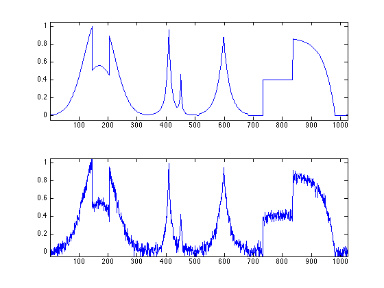
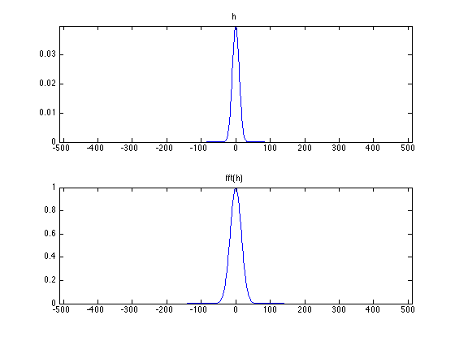
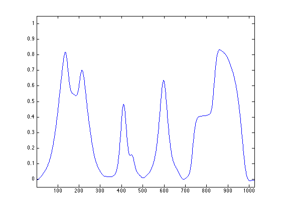
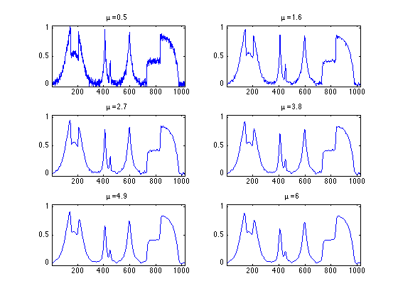
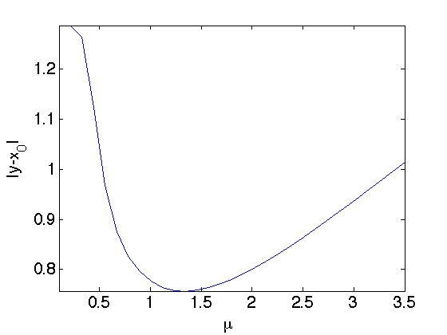
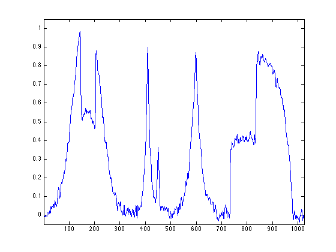
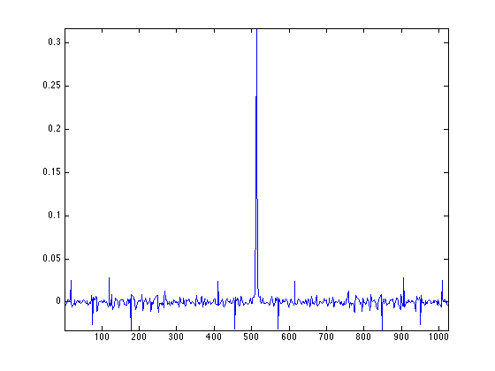
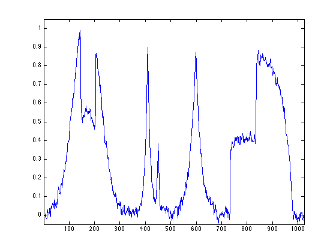

Linear Signal Denoising \(\toto\)
This numerical tour introduces basic signal denoising methods.
Contents
Installing toolboxes and setting up the path.
You need to download the following files: signal toolbox and general toolbox.
You need to unzip these toolboxes in your working directory, so that you have toolbox_signal and toolbox_general in your directory.
For Scilab user: you must replace the Matlab comment '%' by its Scilab counterpart '//'.
Recommandation: You should create a text file named for instance numericaltour.sce (in Scilab) or numericaltour.m (in Matlab) to write all the Scilab/Matlab command you want to execute. Then, simply run exec('numericaltour.sce'); (in Scilab) or numericaltour; (in Matlab) to run the commands.
Execute this line only if you are using Matlab.
getd = @(p)path(p,path); % scilab users must *not* execute this
Then you can add the toolboxes to the path.
getd('toolbox_signal/'); getd('toolbox_general/');
Noisy Signal Formation
In these numerical tour, we simulate noisy acquisition by adding some white noise (each sample is corrupted by adding an independant Gaussian variable).
This is useful to test in an oracle maner the performance of our methods.
Length \(N\) of the signal.
N = 1024;
We load a clean signal \(x_0 \in \RR^N\).
name = 'piece-regular';
x0 = rescale( load_signal(name,N) );
Variance of the noise.
sigma = .04;
We add some noise to it to obtain the noisy signal \(y = x_0 + w\). Here \(w\) is a realization of a Gaussian white noise of variance \(\si^2\).
y = x0 + sigma*randn(size(x0));
Display the clean and the noisy signals.
clf; subplot(2,1,1); plot(x0); axis([1 N -.05 1.05]); subplot(2,1,2); plot(y); axis([1 N -.05 1.05]);
Linear Signal Denoising
We consider a noising estimator \(x \in \RR^N\) of \(x_0\) that only depends on the observation \(y\). Mathematically speaking, it is thus a random vector that depends on the noise \(w\).
A translation invariant linear denoising is necessarely a convolution with a kernel \(h\) \[ x = x_0 \star h \] where the periodic convolution between two vector is defined as \[ (a \star b)_i = \sum_j a(j) b(i-j). \]
It can be computed over the Fourier domain as \[ \forall \om, \quad \hat x(\om) = \hat x_0(\om) \hat h(\om). \]
cconv = @(a,b)real(ifft( fft(a).*fft(b) ));
We use here a Gaussian fitler \(h\) parameterized by the bandwith \(\mu\).
normalize = @(h)h/sum(h(:)); t = [0:N/2-1, -N/2:-1]'; h = @(mu)normalize( exp( -(t.^2)/(2*mu^2) ) );
Display the filter \(h\) and its Fourier transform.
mu = 10; clf; subplot(2,1,1); plot( t, h(mu) ); axis('tight'); title('h'); subplot(2,1,2); plot( t, real(fft(h(mu))) ); axis('tight'); title('fft(h)');
Shortcut for the convolution with \(h\).
denoise = @(x,mu)cconv(h(mu), x);
Display a denoised signal.
clf; plot( denoise(y,mu) ); axis([1 N -.05 1.05]);
Exercice 1: (the solution is exo1.m) Display a denoised signal for several values of \(\mu\).
exo1;
Exercice 2: (the solution is exo2.m) Display the evolution of the oracle denoising error \( \norm{y-x_0} \) as a function of \(\mu\). Set \(\mu\) to the value of the optimal parameter.
exo2;
Display the results.
clf; plot( denoise(y,mu) ); axis([1 N -.05 1.05]);
Wiener Filtering
We suppose here that \(x_0\) is a realization of a random vector \(x_0\), whose distribution is Gaussian with a stationary covariance \(c\), and we denote \(P_{X_0}(\om) = \hat c(\om)\) the power-spectrum of \(x_0\).
Recall that \(w\) is a realization of a random vector \(W\) distributed according to \(\Nn(0,\si^2 \text{Id})\).
The (oracle) optimal filter minimizes the risk \[ R(h) = \EE_{W,X_0}( \norm{ X_0 - h \star (X_0 + W) }^2 ). \]
One can show that the solution of this problem, the so-called Wiener filter, is defined as \[ \forall \om, \quad \hat h(\om) = \frac{ P_{X_0}(\om) }{ P_{X_0}(\om) + \si^2 }. \]
We estimate \( P_{X_0} \) using the periodogram associated to the realization \(x_0\), i.e. \[ P_{X_0} \approx \frac{1}{N} \abs{\hat x_0}^2. \]
P = 1/N * abs(fft(x0)).^2;
Compute the approximate Wiener filter.
h_w = real( ifft( P ./ ( P + sigma^2 ) ) );
Note that this is a theoretical filter, because in practice one does not have access to \(x_0\).
Display it.
clf;
plot(fftshift(h_w)); axis tight;
 Display the denoising result.
clf; plot(cconv(y,h_w)); axis([1 N -.05 1.05]);
Note that this denoising is not very efficient, because the hypothesis of stationarity of \(X_0\) is not realistic for such piecewise-regular signal.